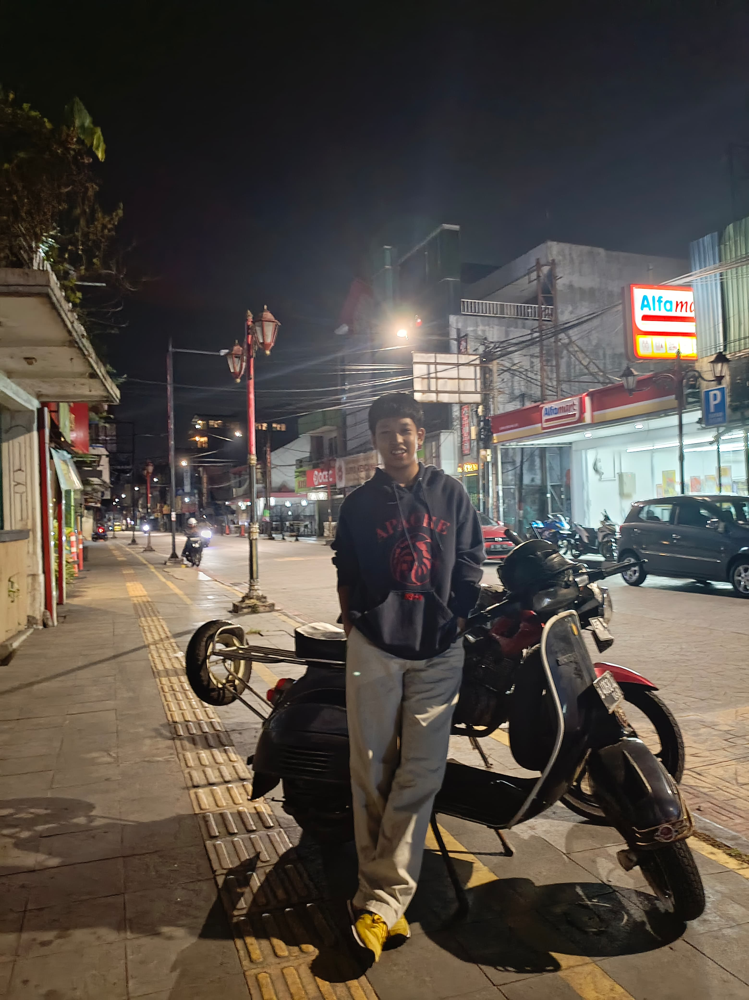

Kampung Adat Kuta
Kampung Adat Kuta terletak di Kabupaten Ciamis, Jawa Barat.
Kampung ini dikenal dengan keunikan adat dan budayanya yang masih terjaga hingga saat ini.
Masyarakat di sini menjalankan kehidupan sehari-hari dengan tetap memegang teguh nilai-nilai tradisional Sunda.
Di Kampung Adat Kuta, Anda dapat menemukan berbagai tradisi dan budaya,
seperti upacara Seren Taun, yang merupakan bentuk syukur kepada Tuhan atas hasil panen.
Selain itu, kampung ini juga menawarkan kerajinan tangan dan keindahan alam yang memukau.